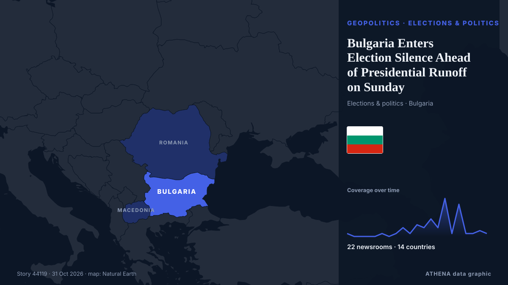

Bulgaria Enters Election Silence Ahead of Presidential Runoff on Sunday

Voting will finish at 8:00 p.m. local time. από TASS (English)
Αναφέρθηκε ανεξάρτητα από 17 μέσα σε 10 χώρες από τις 21 Οκτ, πρώτο το The Globe and Mail· η κάλυψη εξασθενεί. Το ATHENA εκτιμά τον κίνδυνο μέτριο (3.5/10), κυρίως λόγω της σοβαρότητάς του και της εμβέλειάς του. Βεβαιότητα 87% (υψηλή): το επιβεβαιώνουν 17 ανεξάρτητα μέσα, μέση αξιοπιστία 72%. Μέσα ανά χώρα: Βουλγαρία (21), Ινδία (6), Καναδάς (4). Κάλυψη: 21 Οκτ έως 31 Οκτ, 237 ώρες.
Γιατί έχει σημασία: Οι εξελίξεις στην ασφάλεια και τη διπλωματία μπορούν να μετατοπίσουν συμμαχίες, εμπόριο και αγορές πολύ πέρα από τις χώρες που εμπλέκονται.
Τι άλλαξε: 4 νέες αναφορές από 3 μέσα στο 24ωρο έως 31 Οκτ.
Πρώτη διατύπωση: Voter Turnout in Bulgaria Stands at Just 2.4%
Οι τίτλοι των ειδήσεων παρουσιάζονται στα αγγλικά, όπως δημοσιεύτηκαν.
Με μια ματιά
Επιλέγεται, βαθμολογείται και γράφεται από τη δημοσιευμένη μεθοδολογία του ATHENA. Κανένας συντάκτης δεν παρεμβαίνει σε μεμονωμένα γεγονότα. Πώς παράγεται ›
| 21 Oct 10:00 UTC | 1 |
|---|---|
| 21 Oct 22:00 UTC | 0 |
| 22 Oct 10:00 UTC | 0 |
| 22 Oct 22:00 UTC | 0 |
| 23 Oct 10:00 UTC | 0 |
| 23 Oct 22:00 UTC | 1 |
| 24 Oct 10:00 UTC | 0 |
| 24 Oct 22:00 UTC | 1 |
| 25 Oct 10:00 UTC | 3 |
| 25 Oct 22:00 UTC | 1 |
| 26 Oct 10:00 UTC | 4 |
| 26 Oct 22:00 UTC | 3 |
| 27 Oct 10:00 UTC | 6 |
| 27 Oct 22:00 UTC | 3 |
| 28 Oct 10:00 UTC | 13 |
| 28 Oct 22:00 UTC | 1 |
| 29 Oct 10:00 UTC | 11 |
| 29 Oct 22:00 UTC | 1 |
| 30 Oct 10:00 UTC | 1 |
| 30 Oct 22:00 UTC | 2 |
| 31 Oct 10:00 UTC | 1 |
| 28 Oct 16:43 UTC | 5.2 |
|---|---|
| 28 Oct 16:45 UTC | 4.3 |
| 31 Oct 19:42 UTC | 3.5 |
| 31 Oct 19:42 UTC | 3.5 |
Γιατί αυτοί οι αριθμοί
Σημασία
Κίνδυνος
Βεβαιότητα
Η κάλυψη — ποιος το ανέφερε και πότε
ο τίτλος όπως δημοσιεύτηκε · ανοίγει το πρωτότυπο- The Globe and Mail · ΚαναδάςWhat to know about the provincial B.C. election, parties and platforms
- The Globe and Mail · ΚαναδάςToronto’s municipal election faces voter turnout test after 2022 record-low
- Novinite · ΒουλγαρίαVoter Turnout in Bulgaria Stands at Just 2.4%
- Novinite · ΒουλγαρίαCEC with bad news about voter turnout in Bulgaria
- TASS (English) · ΡωσίαVoter turnout in Bulgaria’s presidential poll barely reaches 16% by 4:00 p.m. local time
- Euractiv · ΒέλγιοBulgaria heads for tight presidential run-off after record low turnout
- The Globe and Mail · ΚαναδάςB.C. election turnout slumps to new low as fewer than half of voters cast ballot
- NDTV · ΙνδίαNo Change To Form 6, Declaration Is Separate: Poll Body To Top Court
- BTA (English) · ΒουλγαρίαBulgarian Red Cross and US Embassy Strengthen Cooperation on Safety of Foreign Nationals in Bulgaria
- Hindustan Times · ΙνδίαWest Bengal SIR: Election Commission cites SC orders to justify 1.61 million appeals
- The Hindu · ΙνδίαECI’s stand that additional declaration is not part of Form 6 comes days after SC said it will examine ‘new’ Form 6
- Novinite · ΒουλγαρίαBulgaria Changes Vehicle Registration and Inspection Rules
- Scroll.in · ΙνδίαBengal SIR: Appeals against voter inclusion were filed by state poll officials, EC tells SC
- Politico Europe · ΒέλγιοEU prepares for a grim future with new climate-proofing law
- BelTA (English) — page reader · Λευκορωσία18:39 Presidential decree establishes coat of arms and flag of Gomel District President
- BTA (English) · Βουλγαρία82nd Anniversary of Bulgaria’s Participation in Final Stage of World War II Commemorated Near Stracin
- Novinite · ΒουλγαρίαBulgaria Warns North Macedonia: EU Progress Depends on Protecting Bulgarian Rights
- Novinite · ΒουλγαρίαJust 23% Voted in Bulgaria’s First Presidential Round
- APA (English) · ΑζερμπαϊτζάνUN: Number of armed conflicts worldwide reaches record high
- BTA (English) · ΒουλγαρίαVoter Turnout in First Round of Bulgaria's Presidential Election Stands at 22.98%
- CBC News (alternative feed) · ΚαναδάςPolls open across Manitoba for 'wonderful opportunity' to vote in municipal elections
- Daily Tribune · ΦιλιππίνεςComelec to resume nationwide voter registration 10 November
- Novinite · ΒουλγαρίαVoting Machine Issues in Bulgaria Down Threefold Compared to April Elections
- Novinite · ΒουλγαρίαBulgaria to See Temperatures of Up to 17°C on Thursday
- BTA (English) · ΒουλγαρίαNew drone attack in Bulgaria's Exclusive Economic Zone Dobrich Regional Administration: No Danger to Coastal Settlements After New Black Sea Drone Attack
- The Hindu · ΙνδίαWard-wise voter rolls for Bengaluru civic polls soon
- BTA (English) · ΒουλγαρίαNew drone attack in Bulgaria's Exclusive Economic Zone GERB Accuses Government of "Spineless Behaviour" and "Sweeping Problem Under Carpet" amid Black Sea Attacks
- The Hill · Ηνωμένες ΠολιτείεςSupport for reelecting congressional incumbents at record lows: Gallup
- Hindustan Times · ΙνδίαElection Commission's SIR exercise identifies just 1,600 foreigners on voter lists in six states
- BTA (English) · ΒουλγαρίαYes, Bulgaria Party to Appeal Election Commission's Decision that PM Did Not Violate Election Code
- Novinite · ΒουλγαρίαGyurov and Kandev Get First Slot in BNT and BNR Runoff Broadcasts
- BTA (English) · ΒουλγαρίαBulgaria Among EU Countries with Rising Antimicrobial Resistance, OECD Expert Says
- BTA (English) · ΒουλγαρίαBulgaria Third in Waste Generation per Capita in EU in 2024, First in Landfill Usage
- The Hill · Ηνωμένες ΠολιτείεςScalise stresses voter turnout: 'We can hold the House'
- BTA (English) · ΒουλγαρίαDemocratic Bulgaria Calls for Resignation of CEC Members over "Refusal to Rule on Violations of Cabinet's Press Service"
- BTA (English) · ΒουλγαρίαVoter Turnout Has Fallen Between First and Second Rounds in Bulgaria’s Last Four Presidential Elections
- BTA (English) · ΒουλγαρίαPresidential debate Presidential Candidate Gurov Urges Voters to Turn Out and Bring Someone Along
- Novinite · ΒουλγαρίαBulgaria Beats Some Neighbors on Youth Incomes but Trails Europe
- NPR · Ηνωμένες ΠολιτείεςICE activity is surging ahead of midterms. So is voter turnout.
- BTA (English) · ΒουλγαρίαBulgaria Enters Election Silence Ahead of Presidential Runoff on Sunday